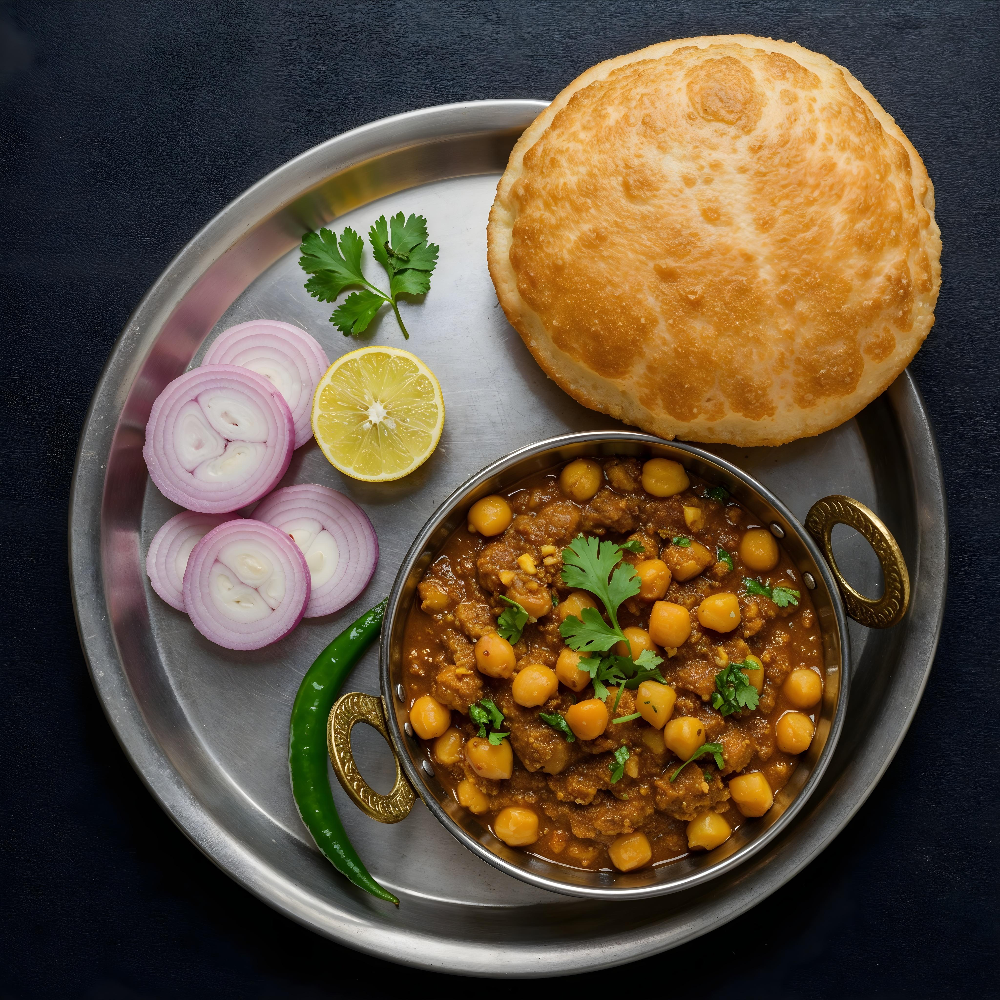

Chola Batura

Chole Bhature also known as Chana Bhatura is one of the most popular Punjabi dish liked almost all over
India. Chole stands for a spiced tangy chickpea curry and Bhatura is a soft and fluffy fried leavened
bread. Chola Bhatura always make for a delicious and filling meal. In this recipe post, I have
included the step-by-step pictorial of making both the chana curry as well as a quick bhatura that
is made without yeast.
About Chole Bhature
Chana Bhatura is a spicy, tasty and a filling dish. I have eaten this dish at many places in Punjab
and Delhi. Each restaurants or dhaba (eateries on highways) have their own flavors and taste in the
chickpea curry.
In some places the curry is very spicy, at other places it has tangy taste and the consistency of
the curry also varies from slightly thick to semi-dry and dry.
This recipe has spicy flavors. This is my mom’s recipe and unlike other versions of chana curry recipes
posted on the blog, this one has a comforting taste and flavor. It does not taste like the restaurant
or dhaba versions but taste very good.
Even the bhature size and flavor varies from restaurants to restaurants. The bhature ideally should be
less oily and should puff fully. They should also be eaten hot and fresh. If you parcel the bhature
from a restaurant then you won’t get the real taste as they become limp and chewy.
Ingredients for Chole:-
- Chickpeas (chole) – 1 cup (soaked overnight)
- Onions – 2 medium (finely chopped)
- Tomatoes – 2 medium (pureed or finely chopped)
- Ginger-Garlic paste – 1 tbsp
- Green chili – 1 (optional, slit)
- Chole masala – 1½ tbsp (or use a mix of below spices)
- Coriander powder – 1 tsp
- Cumin powder – ½ tsp
- Turmeric powder – ¼ tsp
- Red chili powder – ½ to 1 tsp
- Garam masala – ½ tsp
.
- Dry mango powder (amchur) – ½ tsp
- Salt – to taste
- Bay leaf – 1
- Cinnamon stick – 1 small
- Black cardamom – 1
- Cloves – 2
- Oil or ghee – 2-3 tbsp
- Fresh coriander leaves – for garnish
- Tea bag or dried amla – for color (optional)
Chola Recipe:-
-
First rinse 1 cup white chickpeas a couple of times in water. Then soak them in enough water
overnight or for 7 to 8 hours.
-
Next day they will double in size.
-
Then drain the water.
-
In a 3 litre pressure cooker add the chickpeas. Also add 3 cups water and ¼ teaspoon salt. I have
used a pressure cooker but you can also use a pot or pan.The chickpeas will take a lesser time to
cook in the pressure cooker than cooking them in a pot.You can also add a pinch or two of baking
soda while cooking them. Addition of baking soda is optional.
-
Pressure cook chickpeas for 10 to 12 whistles or for about 15 to 20 minutes or till they are tender
and cooked well.Once the pressure settles down on its own then open the lid of pressure cooker and
check if the chickpeas are cooked well or not. It is important to cook them till they are soft and
have a melt in the mouth texture.If cooking them in a pan then it can take about an hour or more.
Just ensure they are well cooked. Timing to cook chickpeas will depend upon their quality and age.
-
Once done then drain all the water and keep the cooked chickpeas aside.
Make Onion Tomato Masala
-
chop 1 medium-sized onion, 2 medium-sized tomatoes, 1 green chili, 4 to 5 medium-sized garlic
cloves and 1 inch ginger.
-
Add them to a blender jar.
-
Make a fine paste in a grinder or blender. No need to add water while making the paste as the juice
of the tomatoes will help in making the paste. keep the jar aside.
Make Chana Curry
-
Measure and keep all the ingredients ready for making the gravy.
-
Heat 2 to 3 tablespoons oil in a pan or kadai/wok.
-
Add the following whole garam masala (spices):
- 1 teaspoon cumin seeds
- 1 large tej patta (Indian bay leaf)
- 2 inches cinnamon
- 2 to 3 cloves
- 2 green cardamoms
- 2 to 3 black peppercorns
-
On low heat fry the whole spices till they are fragrant but don’t burn them.
-
Next add the ground onion-tomato paste.
-
Mix well.
-
Keep stirring often. Sauté for 8 to 10 minutes or more till the oil starts to leave the sides of
the masala paste. The paste will also thicken and become glossy.
-
Keep stirring often. Sauté for 8 to 10 minutes or more till the oil starts to leave the sides of
the masala paste. The paste will also thicken and become glossy.
-
Stir while sautéing so that the paste does not stick to the pan.
-
Then add all the dry spice powders listed below:
- ½ teaspoon turmeric powder
- ¼ teaspoon red chili powder
- ¼ teaspoon red chili powder
- 1 pinch asafoetida (hing)
- ½ or 1 teaspoon dry mango powder (amchur powder)
-
Mix the spice powders very well and sauté for a minute or two.
-
Then add the cooked chickpeas.
-
Mix well.
-
Pour 1 to 1.5 cups water or add as required. Addition of water depends upon the consistency you
want. But don’t add too much water as then the flavors will get diluted.
-
Add salt as required and stir again.
-
Simmer the gravy on a low to medium flame for 12 to 15 minutes or till the gravy thickens.
-
Don’t cover the pan. Stir occasionally. Mash some chickpeas with the back of a spoon. This helps
in thickening the gravy.
-
Add 1 slit green chili and 1 teaspoon garam masala powder or chole masala powder.
-
Stir and simmer the gravy for a minute or two. You can keep the consistency from medium to slightly
thick to semi dry or dry. If you want a dry consistency then simmer for some more time.
-
Check the seasoning and add more salt or spice powders if required. Garnish with coriander leaves.
You can also garnish with some slit green chilies and ginger julienne.
Ingredients for Bhatura:-
- 1.5 cups all-purpose flour (maida)
- ⅓ cup sooji (rava or fine semolina)
- ½ tablespoon oil or ghee
- ½ tablespoon granulated fine sugar
- ½ teaspoon salt or as required
- ¼ teaspoon baking soda
- ½ teaspoon baking powder
- ½ cup curd (yogurt)
- 2 to 3 tablespoons water for kneading or add as needed
- oil for deep frying
Bhatura Recipe:-
-
Sieve the all-purpose flour (maida), salt, baking soda and baking powder in a mixing bowl. Then add
the semolina and sugar to the sifted ingredients.
-
Now add the curd (yogurt). With a spoon mix the yogurt with the sifted ingredients.
-
Adding 2 to 3 tablespoons water in parts and at intervals, first mix well and then start kneading.
Knead to a smooth, supple and soft dough.
-
Cover the dough with a wet cotton napkin and keep aside to rest for 30 to 45 minutes or up-to 2 hours.
-
Later pinch medium sized balls from the dough. Roll each ball between your palms to a round shape.
Keep the dough ball on your work surface and flatten lightly with your fingers. Spread a bit of oil
on both sides of the dough ball.Using a rolling pin, roll into an oval or elongated shape. You can
also make a round shape.
-
In a kadai or wok, keep oil for deep frying on medium-high flame. Drop the rolled dough in hot oil
and it will start puffing within a minute.
-
When the sizzling of the oil stops, turn over and fry the other side. You can flip once or twice
for even cooking.
-
When light golden or golden, remove the bhatura and drain on paper towels to remove excess oil.
This way fry the bhatura in batches.
Home